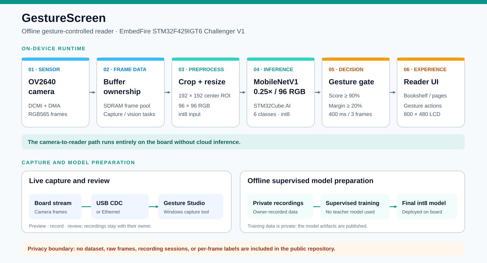

GestureScreen 演示视频
野火 STM32F429 挑战者 V1 上的离线手势控制阅读器。点击播放即可在网页中观看完整演示。
公开版本仅对画面中的人脸打码，保留 1920 × 1080、30 帧/秒；已移除原始拍摄位置等设备元数据。
系统架构

野火 STM32F429 挑战者 V1 上的离线手势控制阅读器。点击播放即可在网页中观看完整演示。
公开版本仅对画面中的人脸打码，保留 1920 × 1080、30 帧/秒；已移除原始拍摄位置等设备元数据。
